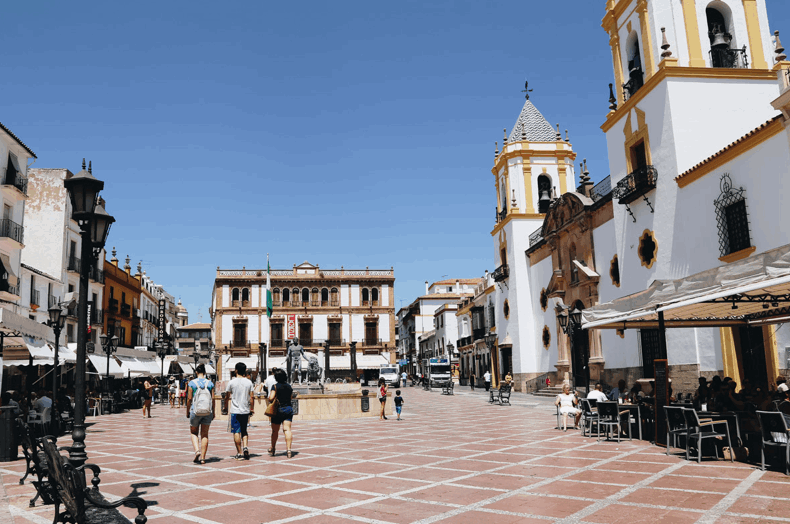

The cobbled alley to the Mondragón leads naturally on to Ronda's loveliest public space, the leafy Plaza Duquesa de Parcent, which boasts a convent, two churches, including the toytown belltower of the iglesia Santa Maria de Mayor, and the handsome arched ayuntamiento (council) building. Nearby calle Armiñan leads down to the spacious plaza of the traditional workers' barrio, San Francisco, with excellent bars and restaurants. Back from the Mondragón, the Plaza del Campillo overlooks steps that zigzag down to a dramatic eye-level through the Puente Nuevo.
The town's pedestrianised 'high street', calle Espinel, opposite the bullring, is nicknamed 'La Bola' and is where Rondeños go for virtually everything and is interesting to r those visitors who like old fashioned shops.
COBBLED STREETS
Across the bridge, where an elegant cloistered 16th century convent is now an art museum, old Ronda, La Ciudad, sidewinds off into cobbled streets hemmed by handsome town mansions, some still occupied by Ronda's titled families. The Casa de Don Bosco is one such, its interior patio long ago roofed in glass against Ronda's harsh winters. Its small, almost folly-like gardens lose out, however, to the true star, a few minutes' walk to the furthest end of the Ciudad, the Palacio Mondragón. Clumsily modernised in parts during the 1960s, this still has working vestiges of the exquisite miniature water gardens dating from its time as a Moorish palace during Ronda's brief reign as a minor Caliphate under Córdoba in the 12th century.
